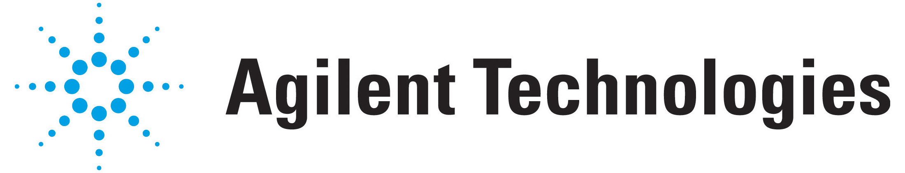

news
26 June 2012
-
The contest entry submission deadline has been updated to July 11.
Paper Deadline
30 April 2012, 5 pm PDT
Poster Deadline
27 June 2012, 5 pm PDT
Contest Entry Deadline
11 July 2012, 5 pm PDT
Follow us on Twitter
@biovis_net / #biovis
Last year's event
BioVis 2011
BioVis 2012 is an official symposium of


BioVis 2012 is affiliated with
BioVis 2012 Gold Supporter

→ View previous announcements
about
The rapidly expanding application of experimental high-throughput and high-resolution methods in biology is creating enormous challenges for the visualization of biological data. To address these challenges, researchers in the visualization and bioinformatics communities need to engage in the design, implementation, application, and evaluation of novel visualization techniques and tools that provide insight into large and highly complex data sets.
BioVis 2012 - the 2nd IEEE Symposium on Biological Data Visualization - aims at bringing together researchers from the visualization, bioinformatics, and biology communities to establish an interdisciplinary dialogue and to promote the sharing of expertise, between both meeting participants and the communities at large. The meeting is intended to educate, inspire, and engage visualization researchers in problems in biological data visualization, as well as bioinformatics and biology researchers in state-of-the-art visualization research.
The symposium will serve as a platform for researchers from these fields to increase the impact of data visualization approaches in biology. The breadth and diversity of biological research topic areas will enable researchers from all parts of the visualization and bioinformatics communities to contribute to this effort and the symposium will provide an excellent opportunity to initiate interdisciplinary collaborations.
BioVis 2012 will be taking place on 14-15 October 2012 in Seattle, WA and will be co-located with IEEE VisWeek 2012. IEEE VisWeek is the premier forum for visualization advances for academia, government, and industry, bringing together researchers and practitioners with a shared interest in tools, techniques, technology, and theory.